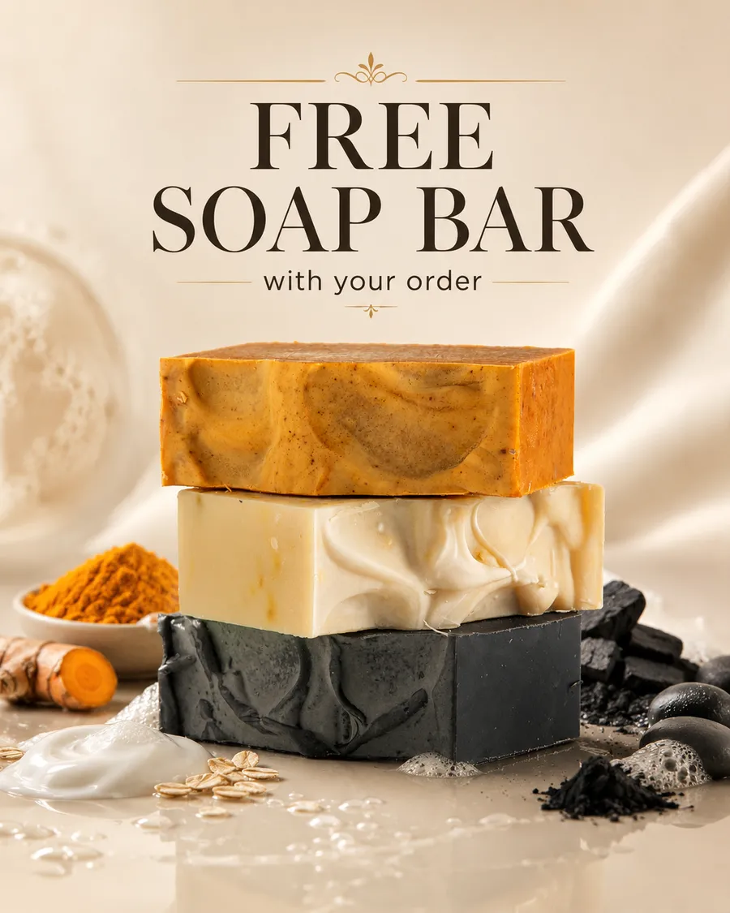
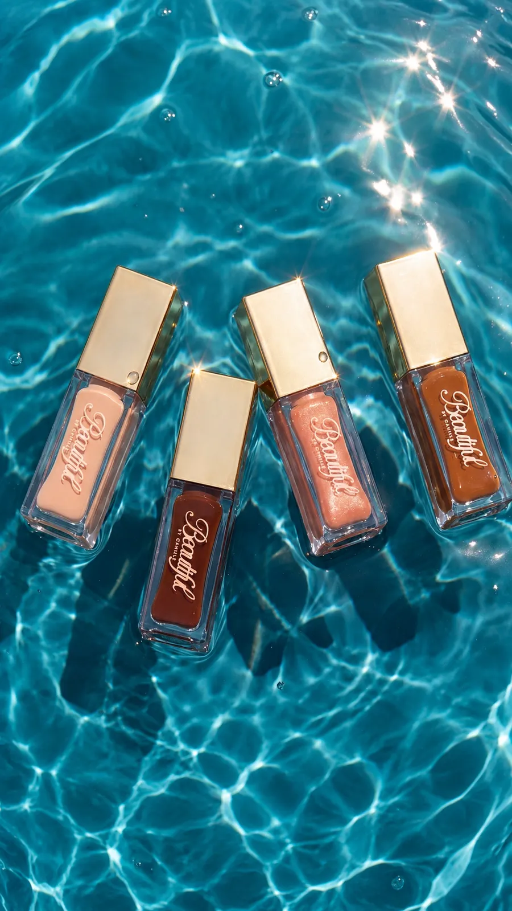

Supported across Shopify, campaigns, paid ads, email/SMS and creative.
For Existing Ecommerce Brand Owners Only
How Ecommerce Brand Owners Remove Themselves From Day-To-Day Marketing And Build A Brand That Keeps Moving Without Them
It’s the same approach we've used across 50+ ecommerce brands from 5- to 7-figure businesses. Designed to keep the marketing moving without you in the middle of every task.
Here’s how it works for you
Your 60-second video goes here
Growth Operator overview
30-Day Execution Guarantee: the agreed work gets completed—or we keep working at no additional fee until it does.
Applies to the agreed first-30-day scope with timely access, assets, feedback and approvals.
Apply before September 17 · 2 spots left
The soonest openings will appear in your local time. Your email is used only to arrange this call. Privacy
Next available
Choose your 30-minute call
Loading the soonest available times…
Calendar not loading? Open it directly
Real Brand Owners. Real Execution.
Real brands. Real work shipped.
Amourlyah Beauty needed hands-on Shopify support. Jason helped manage the store, explained what would improve the brand, and became a reliable point of support instead of just another person giving advice.
Selected ecommerce brands supported
AmoireAmourlyah BeautyATB Luxury CurlsBeauty by CamilleBlixed
Don LucciFitted DscplsGlayse SkinGlowaniSimple Stitch
01The Problem
On paper, you own the brand. In reality, marketing can't run for a week without you.
The campaigns only launch because you pushed them forward
The promotion goes live because you connected the offer, creative, ads, Shopify, email and social.
You’re still the one making sure everyone knows what needs to happen, what needs approval and what has to ship next.
The work only gets finished because you stepped in
The designer needs feedback. The ads specialist needs creative. Shopify needs an update. Email needs approval.
You’re still answering questions, checking the work and making sure everything actually gets done.
Step away and things start slipping
Take three days off and approvals pile up, campaigns get delayed, people start waiting on answers and the marketing slows down.
The business may still operate. But the marketing still needs you in the middle of it.
Good business, no real handoff
You’ve built something real.
But you’re still spending too much time managing campaigns, people, creative, pages and follow-through instead of focusing on the bigger decisions.
You own the brand. But you’re still chained to the marketing department.
So why hasn’t anything you’ve tried actually fixed it?
You don’t need more tasks completed. You need ownership.
See If You Qualify02What You’ve Tried
You’ve already tried getting help with the marketing.
Some of it helped. None of it fully removed you from the middle.
Specialists handle their part, but you still connect everything
The ads person runs ads. The designer makes creative. The email person handles email.
But you’re still the one making sure it all works together.
Freelancers get tasks done, but you still manage the tasks
You brief them, answer questions, review the work and make sure it actually gets launched.
Agencies can take over a channel, but you’re still coordinating the rest
One person handles paid media. Someone else handles Shopify. Another handles creative.
You’re still the one connecting the pieces.
When you stop pushing, the marketing slows down
Approvals wait. Campaigns get delayed. People need answers.
Things move because you keep them moving.
It isn’t that getting help was the wrong move.You just never handed off the ownership.
03The Real Fix
You’ve been handing off the work, without handing off the responsibility.
You can hire someone for ads, someone for creative, someone for email and someone for Shopify. But if you’re still the one connecting priorities, answering questions and making sure everything ships, the marketing still depends on you.
One person needs to own the day-to-day marketing follow-through.
The specialists can focus on their part without everything coming back to you.
You can step back and trust that campaigns, creative, Shopify, email and the rest keep moving.
04What We Take Over
You set the direction. We own the follow-through.
One point of ownership
So you’re not coordinating every person, channel and deadline yourself.
A connected marketing workflow
So Shopify, ads, email, creative and campaigns move from the same priorities.
Reliable execution
So work gets launched, updated and followed through without you chasing every task.
A day-to-day operation that keeps moving
So you can focus on where the business is going instead of managing the marketing.
05The Payoff
You step away, and the marketing keeps moving.
Campaigns still get launched
Promotions, creative, ads, Shopify updates and email keep moving without you personally pushing every step forward.
A real break
You can close the laptop without wondering who is waiting on an approval, what got delayed, or what still needs to go live.
You work on the business
You spend more time on products, growth, partnerships and bigger decisions instead of managing day-to-day marketing execution.
Owner, not marketing manager
You go from being the person holding every moving part together to the person setting the direction.
Our Guarantee
The agreed work gets completed—or we keep working at no additional fee until it does.
You know what we agreed to execute before we start. If we don’t complete it, you don’t pay more while we finish it.
Applies to the agreed first-30-day scope with timely access, assets, feedback and approvals. Revenue and ROAS are not guaranteed.06The Proof
Real brands. Real work shipped.
Across 50+ ecommerce brands, Jason has worked across Shopify, campaigns, paid ads, email/SMS, creative and day-to-day ecommerce execution.
50+Brands SupportedAcross Canada and the U.S.
5–7 FigureBrand ExperienceHands-on experience across different stages of ecommerce growth.
$100K+In Ad Spend ExperienceDirect experience managing and supporting paid campaigns.
“Jason took the time to understand the business, implemented improvements instead of just giving generic advice, and helped make the marketing side easier to manage by keeping the work moving.”
“Jason became a hands-on ecommerce partner who could manage the Shopify side, explain what would help the brand and give the founder one reliable person to work with.”
“Jason reviewed the store, found specific improvements and gave actionable recommendations the team could immediately use.”
Selected Work
A few of the brands, campaigns and ecommerce projects we’ve worked on.
Shopify Store Experience
Store / Mobile Ecommerce

Campaigns & Offers
Campaign / Offer Creative

Creative Production
Product / Campaign Visuals
PANDA-II
Founder Brand / Ecommerce
Before you apply
Questions you’re probably asking.
What exactly is a Growth Operator?+
A Growth Operator is one accountable point of ownership for day-to-day marketing coordination and execution across your channels, specialists and priorities.
Do you replace my existing team?+
Not necessarily. Jason can coordinate the people you already have.
What if I already have an ads specialist, designer or social media manager?+
They can keep focusing on their specialties. Jason helps connect priorities, approvals and follow-through so the work does not keep coming back to you.
Do I lose control of my marketing?+
No. You keep the direction, accounts, assets and major decisions.
What exactly do you handle?+
Scope can include Shopify, campaigns, ads, email/SMS, creative, social and specialist coordination. Exact responsibilities are agreed before starting.
How quickly can we start?+
Start timing depends on current onboarding capacity. If there is a fit, the next available start date will be confirmed on the call.
Is there a long-term contract?+
Start with 30 days. There is no long-term commitment.
How much does it cost?+
Growth Operator engagements start from $3,000 per month.
Do you guarantee revenue or ROAS?+
No. The execution guarantee covers completion of the agreed work, not revenue or ROAS.
The Question Isn’t Whether You Can Do It.
The question isn’t whether you can keep doing the marketing yourself.
It’s whether you still should.
You’ve already built the brand. You shouldn’t still be the person coordinating every campaign, creative request, page update and approval.
See If You QualifyFounder-led. Limited onboarding capacity.